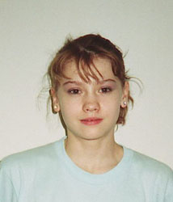

Elena Abrashitova (USSR)
1990 World Sports Fair V Silver Medalist

Elena was born on March 21, 1974, in Kherson (Ukraine). She was coached by Oleg Ostapenko.
Competition Results
1988
Jr. USSR Championships: 5th AA
1989
USA-USSR Dual Meet: 1st Team, 7th AA
USSR Championships: 1st Team, 5th AA
1990
Avignon International: 7th AA
USSR Championships: 12th AA, 4th V
World Sports Fair: 5th AA, 2nd V
1991
BEL-FRA-ROM-URS: 2nd AA
USSR Championships: 1st Team, 18th AA
This page was created on September
11, 2005 and was last updated on January 3, 2007.
© Gymn Forum